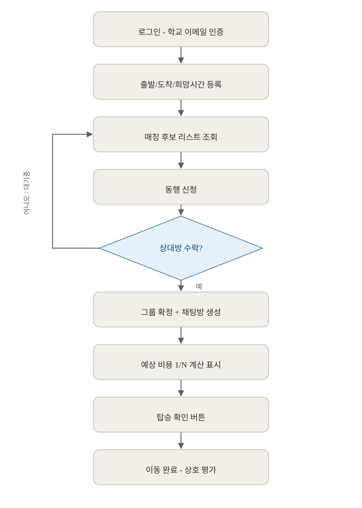
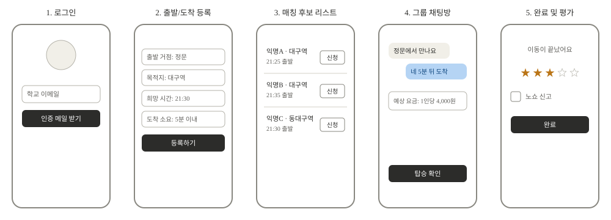

01 · 프로젝트 선정 계기
조모임이나 수업이 끝나고 귀가할 때, 같이 있던 사람들끼리도 귀가 방향은 제각각입니다. 그래서 각자 대중교통을 타거나, 편의를 위해 택시를 이용하는 학생도 있지만 혼자 타면 비용 부담이 커서 포기하는 경우가 많습니다.
택시는 접근성이 뛰어나서 같은 금액이라면 누구나 타고 싶어합니다. 실제로 방향이 비슷한 사람 4명이 함께 타면, 거리에 따라 대중교통보다 오히려 더 저렴해지는 상황도 있습니다.
"택시를 타고 싶은 잠재적 수요는 많지만, 같은 방향으로 가는 동행자를 그 자리에서 찾을 방법이 없어서 실행되지 않는 현실" — 이 지점에서 프로젝트가 출발했습니다.
02 · 문제 정의
대학생은 이동이 필요한 순간 주변에 방향이 겹치는 동행자가 있어도 이를 알 방법이 없어서, 비용을 절감할 수 있는 택시 동승 기회를 놓치고 있다.
Who
특정 활동에 국한되지 않는 일반 대학생
Situation
이동이 필요한 순간, 주변에 방향이 겹치는 동행자가 있을 가능성이 있는 상황
Pain
동행자를 실시간으로 알 방법이 없어 비용 절감 기회를 놓침
03 · 기획 산출물

화면 흐름 (User Flow)

와이어프레임 (초기 5개 화면 스케치)
04 · 핵심 기능 (선정 기준: 필수성 · 적합성)
A. 매칭 알고리즘
같은 거점 + 희망 시간 ±15분 이내 자동 그룹핑. "동행자를 알 방법이 없다"는 문제를 직접 해결
B. 신청/수락 플로우
신청 → 수락 → 그룹 확정. "잠재 수요가 실행되지 않는 현실"을 실행으로 전환
05 · MVP 범위를 좁힌 이유
실제 결제/정산 연동 제외
PG사 연동 없이 "1인당 얼마씩 내야 하는지"만 화면에 표시. 결제 인프라 구축은 4주 안에 부담이 크고, "매칭이 되는가"라는 핵심 검증에는 필수가 아님
실시간 위치 공유 제외
안심귀가 같은 기능은 좋지만, 지도 SDK와 위치 추적 인프라가 추가로 필요해 스코프를 크게 늘림
카풀(자차 이용) 모드 제외
택시 동승만 지원. 카풀은 여객자동차운수사업법상 법적 리스크가 택시 합승보다 크고, 운전자/탑승자 구조도 비대칭이라 별도 검토가 필요해 향후 확장 과제로 분리
지도 SDK 기반 실시간 경로 탐색 제외
고정 거점 리스트 + 자기 신고형 "도착 소요시간" 입력으로 대체. 거점을 소수로 좁혀 초기 사용자 부족(콜드스타트) 문제도 함께 완화
이렇게 제외한 자원을 핵심 기능 2개(매칭 알고리즘, 신청/수락 플로우)를 탄탄히 만드는 데 집중했습니다.
06 · 프로토타입 (진행 상황)
로그인
출발/도착 등록
매칭 후보 리스트
그룹 채팅방
순수 HTML/CSS로 제작해 GitHub Pages로 배포. 확정된 디자인 시스템(레드/코랄 #C8102E, Pretendard)을 실제로 적용했고, 성별 필터·정원 배지·그룹 채팅 동의 흐름 같은 세부 인터랙션까지 반영했습니다.
07 · 기술 스택을 이렇게 정한 이유
| React | 매칭 리스트·채팅 등 상호작용 많은 화면에 적합, 과제 기본 스택 |
| Express | Node.js 기반으로 API(요청-응답 창구)를 빠르게 구성 가능 |
| Supabase | 사용자↔요청↔그룹처럼 관계형 데이터 구조에 적합 + 팀원과 대시보드로 데이터 공유·피드백 용이 |
| 모노레포 | FE/BE 동시 수정을 PR 하나로 관리할 수 있어 소규모 팀에 적합 |
08 · 개발 컨벤션
Conventional Commits
커밋 메시지 앞에 feat:(새 기능), fix:(버그 수정), docs:(문서), refactor:(구조 개선) 같은 종류를 표시. 로그만 봐도 어떤 변경인지 바로 파악 가능
PascalCase 컴포넌트
React 컴포넌트 파일명은 대문자로 시작 (예: WeatherCard.jsx). JSX가 대문자로 시작하는 태그만 컴포넌트로 인식하는 규칙과 연결되어 있어, 관례가 아니라 실제로 지켜야 하는 규칙
camelCase 파일
데이터·로직 파일은 소문자로 시작 (예: mockWeather.js). 대문자(컴포넌트) vs 소문자(데이터/로직)만 봐도 파일 역할을 바로 구분 가능
REST 스타일 API
주소는 명사(복수형), 동작은 HTTP 메서드로 표현 (예: GET /api/candidates, POST /api/applications). 문서 없이도 주소만 보고 어떤 데이터를 다루는지 짐작 가능
모두 CLAUDE.md에 기록해, 이후 개발 시 일관되게 참고
09 · 다음 계획
디자인 시스템을 확정해 프로토타입에 적용했고, 개발 Task를 백로그(우선순위가 매겨진 할 일 목록) 형태로 정리했습니다.
우선순위 체계 도입
P0(핵심 기능에 필수) · P1(안전·품질에 중요) · P2(시간 남으면) 세 단계로 모든 Task에 우선순위를 표시해, 개발 중 무엇부터 해야 할지 흔들리지 않게 함
다음 주(2주차) 목표: 매칭 알고리즘 동작
DB 스키마·인증 API·로그인 화면 구현부터, 거점 데이터 세팅과 매칭 후보 조회 알고리즘까지 — 핵심 기능 A가 실제로 동작하는 것을 다음 주까지 끝내는 것이 목표
이후 3주차엔 신청/수락 플로우(핵심 기능 B), 4주차엔 안전장치와 발표 준비로 이어갈 예정입니다.